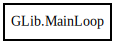

GLib.MainLoop – glib-2.0 Reference Manual
Packages
glib-2.0
GLib
MainLoop
MainLoop
get_context
is_running
quit
run
MainLoop
Object Hierarchy:

Description:
[
Compact
]
[
CCode
( ref_function =
"g_main_loop_ref"
, unref_function =
"g_main_loop_unref"
) ]
public
class
MainLoop
Namespace:
GLib
Package:
glib-2.0
Content:
Creation methods:
public
MainLoop
(
MainContext
? context =
null
,
bool
is_running =
false
)
Methods:
public
weak
MainContext
get_context
()
public
bool
is_running
()
public
void
quit
()
public
void
run
()